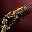
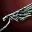
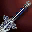
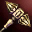
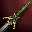
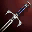

Lineage IIInterludeEnchant
Заточка оружие в Lineage 2 Interlude
75 предметов D–S · шансы +4…+16
Оружие делится на физическое (70% до +15, 35% на +16) и магическое (40% и 20%). Ниже — все предметы, доступные в симуляторе.

Akat Long Bow · C
Elven Bow · C
Sword of Mystic · C · маг.
Dwarven War Hammer · D
Elven Sword · D
Sword of Revolution · D